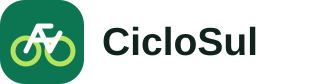
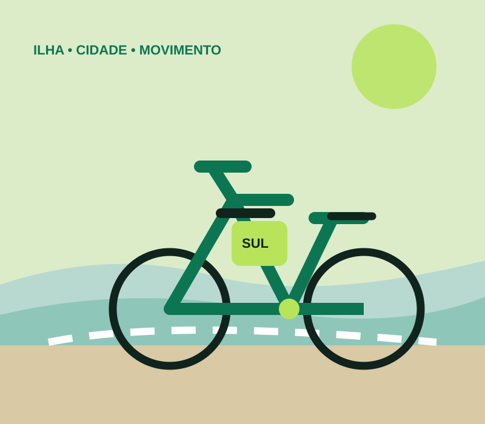
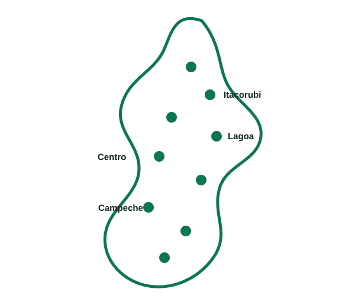

◷
Passeio
Para uma volta rápida
R$8,90/ 30 min
- 1 bicicleta por vez
- Desbloqueio por QR Code
- Pagamento por uso

Quero pedalarVá mais longe, evite o trânsito e descubra a cidade de um jeito leve. Bicicletas e e-bikes disponíveis todos os dias.

Do passeio rápido à rotina diária. Você pode mudar de plano quando quiser.
Para uma volta rápida
Para quem pedala sempre
O melhor custo por mês

Da Beira-Mar ao Sul da Ilha, conectamos bairros, universidades, centros comerciais e pontos de lazer.
Áreas atendidas: Centro, Trindade, Itacorubi, Agronômica, Córrego Grande, Santa Mônica, Pantanal, Saco dos Limões, Lagoa da Conceição, Coqueiros, Estreito e João Paulo.
Acompanhe expansões, parcerias e mudanças no serviço.
A expansão prevê 6 novas estações e reforço da frota de e-bikes nos dois bairros.
EXPANSÃOEstudantes e servidores terão condições especiais no plano mensal a partir de outubro.
PARCERIANovas unidades entram em operação para ampliar a disponibilidade nos horários de pico.
OPERAÇÃOEncontre a estação e veja bikes disponíveis.
Desbloqueie a bicicleta em poucos segundos.
Finalize a viagem em qualquer estação CicloSul.